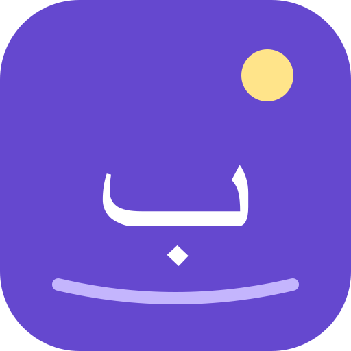

Nama panggilan dan kemajuan hanya disimpan pada peranti ini. Tiada akaun atau penghantaran data.
Tulisan tangan ialah latihan kendiri bersama ibu bapa. Aplikasi tidak mengenal pasti atau menilai tulisan secara automatik.